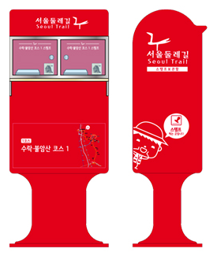

안내지도, 스탬프 북 받기
| 서울시청 1층 열린민원실 | 02-2133-7904~5 |
|---|---|
| 서울둘레길 안내센터(창포원) | 070-4465-7905~6 |
| 아차산관리사무소 | 02-450-1655 |
| 양재시민의숲관리사무소 | 02-575-3895 |
| 관악산관리사무소 | 02-879-6561 |
유의사항 안내지도, 스탬프북 물량이 없을 수 있으니 문의전화 후 방문하세요.
스탬프 투어 안내

서울둘레길에는 우체통을 활용하여 총 27곳(화랑대역 1-3, 2-1 스탬프가 함께있음)의 스탬프시설, 총 28개의 스탬프를 만들었습니다. 28개의 스탬프는 사람들의 이야기를 전해주던 우체통 처럼 둘레길을 걷는 도보여행자들에게 추억을 만들어 줄 것입니다.
서울둘레길 스탬프에는 둘레길에서 만나는 역사, 문화, 자연생태가 모두 담겨있습니다. 스탬프를 찍으며 서울둘레길의 추억을 간직하고, 내가 걸은 코스를 기록하며, 서울의 이야기를 떠올려 보세요. 스탬프와 함께 걸음걸음마다 숨겨진 이야기를 따라 서울을 직접 느껴 보실 수 있을 것입니다. 28개의 스탬프를 모두 받아오시면 서울둘레길 완주 증명서를 발급 해 드립니다.
완주인증서
완주인증서 발급 방법

완주인증서는 대리 발급이 가능합니다.
타인이 대리 발급하러 올 경우, 완주자 인적사항(성명, 생년월일, 연락처, 주소, 이메일) 내용을 미리 준비해주세요.
발급 장소 및 시간
| 장소 | 서울둘레길 안내센터 (창포원) |
|---|---|
| 주소 | 서울시 도봉구 마들로 916 (도봉동 4-2) 1층 서울둘레길 안내센터 지하철 7호선 도봉산역 2번 출구 30m (창포원 공원 내) |
| 시간 | 월,화,목,금,토,일 *주말가능* 9시~18시 (점심시간 12시~13시 ,수요일 정기휴무) |
| 문의 | 070-4465-7905~6 02-779-7902~4 |
둘레길 안내판
안내표시를 따라가 주세요.
종합안내판
구역안내판
숲속형
도심형
지주형
부착형(전봇대 )
리본형
바닥형
안전구조판